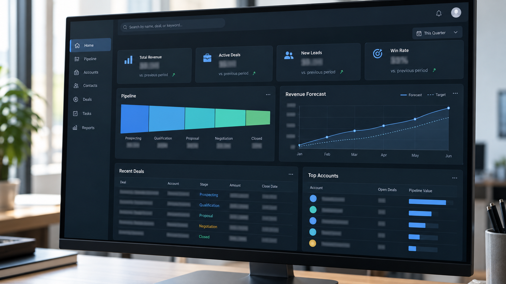

Signal
A deal hasn’t moved in 21 days.
CRM & revenue operations
Turn stalled deals, missed handoffs, and unanswered signals into clear ownership, defined actions, and measured outcomes.

Recognize the gap
A deal hasn’t moved in 21 days. A key account has gone quiet. A new lead waited two days for a call. The forecast slipped, or sales and marketing are counting differently.
Your CRM can surface the issue. Revenue operations connects that information to the people and processes responsible for the response.
A deal hasn’t moved in 21 days.
One named person, visible to the team.
One defined action with a due date.
Re-engaged, or not. Both counted.
Revenue Bridge Solutions (RBS), a service from Spiras, applies this operating model to the CRM you already use. aCTOr Advisory helps you explore fit and connect with the provider.
The installed deliverable
The RBS offering describes a Revenue Operations OS installed in your existing CRM and handed to your team in 90 days. The agreed scope sets out what will be built and who is responsible for each part.
Give revenue signals named owners across four levels: Champion, Overseer, Domain Owner, and Executor. Connect those responsibilities to your CRM’s roles and permissions.
Carry the response on a CRM task: a trigger, a named owner, a deadline, and one defined action. The necessary custom fields support a consistent process.
Create and assign tasks when an agreed signal fires, then escalate overdue actions to the Overseer. Confirm configuration and implementation responsibilities as part of the project scope.
Give each metric a name, an owner, a target, and a review cadence. NUCLEO covers 20 Core-3 metrics; INTERO extends to 58 metrics across nine domains.
Track agreed goals against your Day-1 baseline, with performance and ownership visible in the same place the work happens.
Correct the data before automation begins, including missing information and owner assignments, so the operating process has a reliable foundation.
The goal is full ownership at Day 91: documented operating logic, team training, and a handoff that supports independence.
Named · Owner · Cadence · Outcome
These are the framework’s scope counts, not promised performance gains. The KPI catalog defines what gets measured, who owns it, and when it is reviewed.
Sales cycle length, win rate, pipeline coverage ratio, 14-day stall rate, and deal-recovery rate.
KPI variance from target, KPIs under governance, forecast accuracy, variance response time, and review cadence compliance.
Handoff SLA compliance, shared stage-definition adherence, cross-functional review cadence, MQL-to-SQL conversion rate, and misalignment incidents.
Signal-to-action rate and AI insight adoption rate.
Net Revenue Retention, Time to First Value, and renewal rate.
Market share, competitive win rate, and segmentation coverage.
Price realization, gross / profit margin, and segment profitability.
Churn probability accuracy and predictive model drift.
Stack utilization rate, integration health / uptime, and tool redundancy.
Examples shown from the supplied KPI catalog. NUCLEO covers the first three domains; INTERO extends the framework to all nine.
Your existing CRM
The installation approach uses the platform’s native capabilities. The deliverables sheet identifies the following CRM and automation engines; compatibility and scope should be confirmed for your setup.
The focus here is CRM and revenue operations. Use of a platform such as NetSuite does not establish a broader ERP implementation scope.
Choose your scope
A 90-day installation covering Sales Process Optimization, KPI & Performance Tracking, and Cross-Functional Alignment, with 20 governed Core-3 metrics.
A 90-day installation extending the operating framework across all nine domains and the full 58-metric KPI catalog.
A 30-day sprint addressing 1–3 targeted domains. Explore focused Playbook work or support during a leadership transition when core revenue leadership is already established.
For NUCLEO and INTERO, structured capability reviews can include diagnostics at Day 30 and Day 60 after handoff, followed by a full Day 90 review. VERIFICA is not offered with AVANTI in the supplied deck.
A useful starting point
Start with four questions before choosing an installation.
A gap in any of these areas is a reason to explore the offering. If all four are in place, a focused sprint may be more relevant.
RBS INDICE™
Answer 39 questions across nine domains in about six minutes. The free maturity diagnostic identifies gaps in ownership, action, and measurement.
Contact aCTOr Advisory to request access. Access can be approved within 24 hours.
A weighted maturity score across all nine domains.
A domain-by-domain view of where attention is needed.
Emailed results and a no-commitment review call.
The full customized Playbook is part of an installation, rather than the diagnostic.
Request diagnostic access ↗aCTOr Advisory
Tell us where your CRM or revenue process is getting stuck. We’ll help you explore whether this offering fits and connect you with the provider to confirm responsibilities, scope, and next steps.